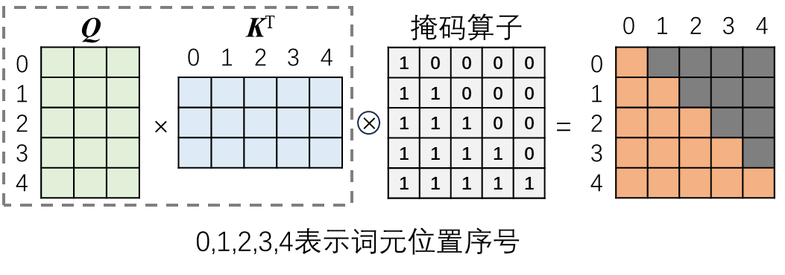
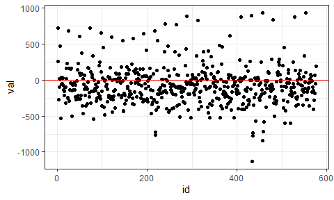

6 R语言深度学习建模
迄今为止，深度学习是人工智能中最热门的领域，也是目前商业应用最广泛的AI技术。深度学习能够成功的重要因素可以归结为三点：一是大数据的积累，二是算力的提高，三是自动化的深层次特征提取和表示。复杂高维数据让手动特征工程成为不可能的任务，但没有大数据的积累和计算机硬件（特别是基于GPU的高性能计算）的进步，深度学习的自动化深层次特征提取与表示就英雄无用武之地。
目前的深度学习技术几乎都基于神经网络，而神经网络的研究可以追溯到20世纪40年代，经历了三次高潮和两次低谷，大致可以划分为三个周期：
（1）第一个周期为感知器时代（1943~1986）
以1943年Warren McCulloch和Walter Pitts提出MP（McCulloch-Pitts）神经元模型为开端，以1957年Frank Rosenblatt提出作为二元分类器的简单前馈神经网络——感知器（Perceptron）模型为高潮起点，到1969年Marvin Minsky与Seymour Papert合著的《Perceptrons》一书对感知器提出批判而进入低谷。
（2）第二个周期为BP算法时代（1986~2006）
以1986年David Rumelhart、Geoffrey Hinton和Ronald Williams提出误差反向传播（BP）算法为高潮起点，随后数以百计的神经网络模型被提出，并发明了神经网络计算硬件，但在1995年以后进入低谷，主要原因是当时有限的计算机硬件无法支持大规模神经网络的训练。上世纪90年代末到本世纪初，基于核函数在高维空间实现线性可分的支持向量机（SVM）成为机器学习领域的引领者。在这个周期的低谷阶段，涌现了很多为后来深度学习发展奠定坚实基础的研究成果，如1997年Sepp Hochreiter等提出的LSTM模型，1998年Yann LeCun等提出的第一个卷积神经网络LeNet-5等。
（3）第三个周期为深度学习时代（2006年至今）
以2006年Geoffrey Hinton等人提出深度信念网络（DBN）和深度学习概念为开端，以Geoffrey Hinton团队设计的卷积神经网络模型AlexNet在ImageNet竞赛中夺冠为高潮起点，随后循环神经网络RNN及其变种LSTM（长短期记忆网络）、生成对抗网络GAN等更多类型的深度神经网络纷纷涌现。2017年谷歌的研究团队提出了基于自注意力（Self-Attention）机制的Transfomer架构，为后来自然语言处理大模型如BERT、GPT等的蓬勃发展铺平了道路。
本章基于R包torch介绍深度学习建模技术，聚焦应用，基于案例来学习和掌握R语言和torch包构建典型的深度神经网络模型。
6.1 深度学习概述
6.1.1 深度学习概念及其特点
深度学习是一种基于人工神经网络（ANN）架构对数据进行表征学习（Representation Learning）的算法，是机器学习的一个重要分支。传统机器学习实现了特征到输出的映射，但深度学习则从原始数据自动学习特征表示，构建层次化的概念体系，让计算机从简单概念来学习复杂概念。这不仅仅是简单的特征工程自动化，因为深度学习模型自动提取的特征往往比手动提取的特征表现更好。与传统机器学习相比，深度学习具有如下特点：
（1）特征工程自动化。深度学习直接利用不同架构的神经网络从原始数据提取深层次的特征表示，不再需要手动特征工程。这个特点对于大数据特别是影像、音频、文本等非结构性数据的特征工程而言，其进步是不言而喻的。
（2）应用可扩展。深度学习模型能够通过增量学习转换到同一领域的不同应用，而传统机器学习模型则具有很大的局限性。例如，预训练的宠物识别深度神经网络模型可以非常容易地应用于野生动物的识别。
（3）成本昂贵。深度学习是大数据和高算力驱动发展的，大数据的获取成本很高，高算力的专用硬件（高级GPU）也非常昂贵，而且深度学习模型的训练往往需要很长的时间，LLM的训练时间动辄数月时间，期间的能耗也极为惊人。据研究测算，大语言模型GPT-3（1750亿个参数）一次训练的电力消耗近19万kW·h，同时产生与汽车行驶70万公里相当的二氧化碳排放量。
抽象和形式化的任务对人类来而言往往具有较高的难度，例如可以用公式表达的数学问题，但计算机很容易解决。那些难以形式化描述但人类可以凭直觉轻松执行的任务，如图像分类、语音识别、语言沟通等，计算机却难以解决，但深度学习在这方面正在赶超人类。
6.1.2 人工神经网络基础
6.1.2.1 神经元数学模型和神经元层
人工神经网络是一种模仿生物神经元（ 图 6.1 左图）运行机制的仿生智能算法，其构成的基础单元是人工神经元（Neuron，也称节点，示意图见 图 6.1 右图）。人工神经元是对生物神经元功能的模仿，其输入相当于生物神经元的树突，输出相当于生物神经元的轴突（轴突的信号可以通过突触或称轴突末梢传递给后续连接的神经元），对输入的处理（包括激活函数，Activation Function）相当于生物神经元的细胞核。
神经元是神经网络中的基础计算节点，对每一个输入特征都对应一个权重（weights），表示连接强度，控制信息的流动。每个神经元一般还设置一个小的常数项，即偏置（bias），相当于是输入特征恒定为1的权重。偏置的意义在于避免神经元的加权和为0的情况。所有输入特征的加权和与偏置的总和作为激活函数的输入，激活函数的输出即为神经元的输出。正是权重和偏置让神经网络拥有了强大的表达能力和学习能力。
Frank Rosenblatt发明的基于人工神经元（MP模型）的感知器是世界上第一个人工神经网络，其激活函数是一个阶跃函数，能够实现简单的线性二分类。在二维平面上，感知器是一条直线，不能划分异或区间，因此无法解决异或问题。让神经网络具有强大的功能，就需要采用更多神经元。在复杂神经网络中，神经元按层组织，即神经元层（Layer），层内所有神经元具有相同的激活函数。最典型的神经网络是前馈式全连接网络（ 图 6.2 ），即数据流从输入层（输入层不是由神经元构成，只是第一个隐层的输入）到隐层（可以有多个）再到输出层。神经网络由神经元层逐层搭建而成，通常将隐层数≤2的神经网络归为浅层神经网络，而将隐层数≥3的神经网络归为深度神经网络（ 图 6.2 右图）。
6.1.2.2 激活函数
在多层神经网络中，激活函数非常重要，如果没有激活函数，整个多层网络本质上就是一个单层网络。激活函数将神经元的所有输入加权之和（包括偏置）作为输入，经过激活函数的计算转换为神经元的最终输出。激活函数通常要求可导、单调且其导函数值域在较小区间内，大多数激活函数是非线性的。常用的激活函数有Sigmoid、Tanh、ReLU等类型，这三种激活函数及其导函数的图像如 图 6.3 所示。
Sigmoid和Tanh函数的缺陷是存在值域饱和区，从 图 6.3 可见，二者将较大的输入转换为接近1的输出，将较小的输入转换为接近 -1或0的输出，而对0附近狭窄区间的输入变化最敏感。这意味着，当输入值在二者的饱和区时，相应导数接近于0，这对基于梯度下降法进行训练的神经网络而言，导致了梯度消失问题。ReLU函数则能有效缓解梯度消失问题，且计算成本更低。但ReLU函数将小于0的输入转换为0，降低了神经网络恰当拟合数据或训练的能力，为此提出了一种改进的ReLU函数——Leaky ReLU函数，该函数和导函数的图像见 图 6.4 。Leaky ReLU函数对小于0的输入，引入了一个小斜率的线性函数作为激活函数，从而有效克服了ReLU函数的缺陷。ReLU具有稀疏性，只能用于隐层。相比Sigmoid和Tanh激活函数，ReLU能够更积极的打开或关闭神经元。
6.1.2.3 权重更新与梯度下降法
在前馈神经网络中，数据流从输入层开始逐层处理并传向输出层的过程称为正向传播，然后将网络输出标签与实际标签的损失函数构造为目标函数（一般都是凸函数），反向逐层求出目标函数对各神经元权重的偏导数（链式法则），构成目标函数对权重的梯度，并根据梯度逐层更新权重，这是网络训练过程中最重要的步骤，即反向传播（Back Propagation）。当网络输出标签与实际标签的偏差达到期望值时，结束网络训练。
神经网络反向传播的过程，是利用梯度更新网络权重的过程，本质上是对目标函数的优化，捕获全局最优（通常都是寻找目标函数的最小值）。在深度神经网络的训练中，最常用的优化算法是梯度下降法( 图 6.5 )。梯度是一个向量，表示函数在某点处的方向导数沿着该方向取得最大值，即函数在该点处沿着该方向（即该梯度的方向）变化率（即该梯度的模）最大。对于一元线性函数，梯度就是斜率，对于多元函数，梯度由各个自变量的偏导数组成。
显然，沿着梯度负方向减小函数值，不断迭代，就能找到或接近目标函数的最小值。距离最优解越远，梯度越大，距离最优解越近，梯度越小。初始位置、下降方向、下降步长是梯度下降法的三要素。在步长的计算中有一个学习率的参数，学习率太小，每次步长更新太小，迭代次数显著增多；学习率太大，则无法保证收敛到最优解。因此，选择合适的学习率极为重要，很多基于梯度下降的优化算法都聚焦于学习率的调整，例如AdaGrad算法、RMSProp算法、Adam算法等，以加快网络训练的收敛速度。每次迭代中输入的样例数量显著影响梯度下降法的收敛：每次迭代输入一个样例的随机梯度下降法（SGD），收敛速度快，但波动性大，不能保证每次迭代都朝正确方向前进；每次迭代输入全部样例的全量随机梯度下降法（Batch SGD）能保证每次迭代都朝正确方向前进，但迭代时间长，内存消耗大；而每次迭代输入多个样例的小批量随机梯度下降法（Minibatch SGD）是一个折中的算法，选择合理的Batch大小，可以让收敛速度比SGD更快、更稳定，在最优解附近跳跃小，甚至能够得到比全量随机梯度下降法更好的解。
6.1.2.4 随机失活和批归一化
深度神经网络容易出现过拟合和训练收敛速度慢等问题，随机失活（Dropout）和批归一化（Batch Normalization）等正则化方法可以克服这类问题。
随机失活方法( 图 6.6 )是在网络训练阶段的前向传播过程中，以一定概率让某些神经元失活，从而克服过拟合并提高泛化性能。Dropout与传统剪枝（Prunning）方法不同，剪枝方法是按设定规则永远丢弃神经元，而Dropout只是在训练阶段暂时地随机丢弃神经元。
此外，随着网络训练中权重的更新，除了第一层的输入数据外，后面每层输入数据的分布都会随之变化，因为在训练的时候，前层训练参数的更新将导致后层输入数据分布的变化，产生所谓的“内部协变量偏移（Internal Covariate Shift）”问题，导致训练的不稳定性，如果数据分布偏移到激活函数的饱和区，网络训练就会非常慢，难以收敛。由于深度神经网络广泛采用小批量随机梯度下降法，批归一化与数据预处理中的归一化相似，但转换公式中增加了尺度参数\gamma、平移参数\beta和一个常数项\varepsilon（微小正数），二者的区别如 图 6.7 所示。
6.1.3 经典神经网络模型简介
神经网络的基本结构根据数据流向可分为前馈神经网络（Feed Forward NN）和反馈神经网络（Feed Back NN）。在前馈神经网络中，数据从输入层开始，每层神经元接收上一层神经元的输出，并输出给下一层的神经元。在反馈神经网络中，除了与前馈神经网络一样的数据流向外，隐层神经元还能接收自己的上一次输出，具有记忆性，在不同时刻具有不同的状态。
6.1.3.1 全连接神经网络FCNN
FCNN是一种典型的前馈神经网络（ 图 6.2 ），MLP是FCNN的一个代表。在FCNN中，层内神经元互不连接，相邻层的神经元完全互相连接。FCNN的优点是具有很强的灵活性和表达能力，但也存在参数量大和容易过拟合的缺点。
6.1.3.2 卷积神经网络CNN
CNN利用多个卷积层来提取图像的各种局部特征。卷积层利用卷积核（本质上是一种滤波器）执行卷积运算( 图 6.8 )，不同的卷积核能够提取出不同的特征，特别是对象的边缘。CNN中的卷积和数学中的卷积是两种不同的运算。数学卷积的卷积核是预先设定的，运算前先将卷积核绕中心旋转180度，然后与矩阵对应位置相乘并求和；而CNN中的卷积核是随机初始化再经过训练或学习而得到的，运算时卷积核无需旋转，卷积核与图像（矩阵）局部区域对应位置相乘并求和，亦即以卷积核为权重对图像局部区域像素值加权求和，本质上是一种互相关（cross-correlation）运算。卷积运算根据CNN的输入维度，可以是一维，也可以是二维、三维。
卷积核的大小（kernel size）决定其感受野。例如一个3×3的二维卷积核，一次扫描的感受野是9个像素，而一个5×5的二维卷积核，其感受野是25个像素。
原始图像经过卷积核运算后，图像边缘被修剪，生成的新图像变小，导致信息部分损失。为了解决这个问题，需要对原始图像边缘进行填充（填充值一般为0）操作( (fig?)=6.9 )，此即所谓的“padding”。图像高和宽两个维度的填充数根据卷积核的高和宽进行调整，以使输出和输入的图像具有相同的高度和宽度。
当原始图像过大，可通过调整卷积核移动的步长（stride）来压缩部分信息。步长包括水平和垂直两个方向， 图 6.10 演示了步长在水平和垂直两个方向都为2的卷积运算示例。
对卷积核进行扩张（dilation）来增大感受野，可以克服因卷积核移动步长过大而导致的图像失真问题。一个3×3的卷积核，当扩张系数为2时，其感受野会扩大为5×5，扩张后的空洞用0值填充，实际计算量并没有增加，如 图 6.11 所示。
输入CNN的图像还有一个通道（channel）的概念。灰度图像只有一个通道，而标准彩色图像有红绿蓝（即RGB）3个通道。同时，还要设定输入图像的批量大小（batch size）。因此，CNN的初始输入是一个四维数组，例如1×3×64×64，表示输入是批量大小为1的3通道64（高）×64（宽）像素的彩色图像。
卷积运算后的结果经过激活函数的处理，维度保持不变。但一个图像采用多个卷积核执行卷积运算后，维度急剧上升，导致模型参数“爆炸”，因此需要进行降维操作。池化（pooling）运算是一种在CNN中广泛使用的降维操作。在卷积操作后进行池化，不仅能够降低卷积结果的维度，减少参数和计算量，而且能够突出最具代表性的特征，降低像素的重复性，让后续的卷积层操作更有意义。池化本质上是一种聚合运算，包括最大池化（maximum pooling）和平均池化（average pooling），如 图 6.12 所示。
通常，一个完整的卷积层包括卷积运算和池化运算。CNN一般利用很多个卷积层来提取不同的特征，然后将高维输出展平（flatten）为低维结果，传给后面的全连接层或其他类型的神经元层，进行分类或回归。 图 6.13 是第一个CNN架构——LeNet-5，由Yann LeCun等于1988年发表。LeNet-5包括2个卷积层和3个全连接层，使用平均池化。2012年在ImageNet竞赛中一骑绝尘的AlexNet只是在LeNet-5的基础上堆叠了更多卷积层，由5个卷积层和3个全连接层构成，拥有6千万个参数。
CNN不仅仅应用于图像分类、目标检测等有影像数据，还可以拓展用于序列数据等。
6.1.3.3 循环神经网络RNN及变体
RNN及其变体的隐层神经元的输出能够传递给自身，从而具备处理序列数据的天赋，这特别适用于语音、视频、自然语言处理、时间序列建模等，因为序列数据的前后元素（深度学习中通常称为token，即构成序列的最小单位，也称词元）之间存在密切联系。 RNN的雏形是1982年提出的单层反馈神经网络 Hopfield Network，是，用来解决组合优化问题。此后的发展中因“梯度消失”和“梯度爆炸”问题，RNN的训练非常困难，应用十分受限。1997年出现了两个RNN的改进版本，一个是Sepp Hochreiter等提出的长短期记忆（LSTM）网络，使用门控单元及记忆机制来解决RNN的训练问题，另一个是Mike Schuster等提出的双向RNN模型（Bidirectional RNN），神经元当前输出同时考虑“上下文”，即同时利用过去和未来的信息。这两种模型拓宽了RNN的应用范围，推动了深度学习在文本、语音、视频、时间序列等法方面的应用。
传统RNN的结构如 图 6.14 所示，其计算核心是一个采用tanh激活函数的全连接网络，但每一时刻的输入是由上一时刻自身的输出h_{t-1}与当前时刻的输入x_t合并组成。
LSTM是一个结构更复杂的RNN变体，其结构与计算如 图 6.15 所示。LSTM计算核心包括5个FCNN，其中3个激活函数为sigmoid，2个为tanh，分别构成三个门控单元：遗忘门、输入门和输出门。此外，LSTM还增加了Cell状态，每一时刻的输入除了上一时刻自身的输出ht-1与当前时刻的输入xt的组合，还有上一时刻的Cell状态Ct-1。
GRU（门控循环单元）由重置门和更新门组成，是对LSTM的一种计算简化，其结构与计算如 图 6.16 所示。
双向RNN模型的隐层采用2个RNN单元（一般采用LSTM），一个正向处理输入，一个反向处理输入，二者的输出拼接后传递给输出层。图 6.17 演示了一个双向LSTM网络的结构示意图。
RNN和双向RNN网络的隐层都可以堆叠多个RNN单元来构造更深度的网络，但通常建议不要超过3个单元，因为RNN单元在时间维度上是连接的，这意味着每增加一个时序，RNN网络随之增加一个自我拷贝，网络就会变得越来越大，对算力要求急剧增加。
6.1.3.4 自注意力神经网络Transformer
2017年谷歌研究团队在《Attention is all you need》一文中提出了颠覆性的Transformer模型。该模型基于自注意力（Self-attention）机制，实现了捕获长序列中的时间依赖关系与距离无关，克服了RNN和CNN在处理长序列方面的弱点，突破了RNN不能并行计算的限制。基于Transformer的预训练模型（PTM）在语言、语音、视觉和强化学习等各种任务上取得了最高水平的性能，并在大语言模型（如GPT、BERT、LLaMA、ChatGLM等）的发展中发挥了重要作用。
Transformer模型主要由编码器（Encoder）堆栈和解码器（Decoder）堆栈组成，编码器的输入是原始输入序列通过嵌入层（Enbedding）的输出与序列元素位置编码（Position Encoding）的和，解码器的输入包括与原始输入序列对应的目标输出序列通过嵌入层的输出与序列元素位置编码的和，还包括来自编码器的输出。解码器的输出经过Linear层和Softmax层，输出目标序列。其结构示意图如 图 6.18 所示。
（1）嵌入
在深度学习中，嵌入是用一个低维稠密向量来表示一个对象，使得这个向量能够表达相应对象的某些特征，同时向量之间的距离能反应对象之间的相似性。因此，嵌入的数学本质是以独热编码为输入的单层全连接神经网络的权重，是一种表征学习（representative learning）。嵌入能够根据需要进行降维嵌入或升维嵌入，且信息不丢失。采用相应的嵌入方法，文字、图片、语音、视频、网络图、日期时间等就可以转化为神经网络能识别、能使用的信息。
（2）位置编码
序列数据中词元的位置是非常重要的信息。CNN和RNN都具有捕获序列中词元位置信息的能力，但都是局部的位置关系，不能获得全局位置信息。Transformer通过位置编码来获得序列中词元的位置信息。位置编码也是一种嵌入方法，是位置信息的表示学习。位置编码可分为绝对位置编码、相对位置编码和旋转位置编码。绝对位置编码是将位置信息转换为向量，在与嵌入向量合并（相加或拼接）。相对位置编码在计算注意力分数时加入可学习的位置参数。旋转位置编码通过在注意力计算中引入一个旋转操作来实现位置编码，即将词元向量在复数空间中进行旋转，旋转的角度由位置决定，从而直接编码了位置信息的方向。与传统的绝对位置编码和相对位置编码相比，旋转位置编码具有更好的外推性，并在大语言模型中得到广泛应用。
根据位置向量是否随网络训练而改变，可分为固定位置编码和可学习位置编码。固定位置编码可以视为一种数据预处理方法，其中最经典的方法是采用正弦和余弦函数对词元绝对位置进行固定编码，生成与词元嵌入向量大小维度相同的位置编码向量，即对于输入矩阵中第i行、第2j列和2j+1列上的词元，用下列公式分别计算位置编码：
PE_{pos,2i} = \text{sin}\frac{pos}{10000^{2i/d}}\\ PE_{pos,2i+1} = \text{cos}\frac{pos}{10000^{2i/d}}\\ \tag{6.1}
上式中PE是位置编码向量，pos是词元在序列中的位置序号，d是PE的维度，与嵌入向量一致；i \in [0,d/2-1]。
（3）编码器与自注意力
编码器采用自注意力（self-attention）机制计算输入序列的注意力分数，编码器的计算结构如 图 6.20 所示，其中最关键的是多头自注意力（MHA）模块。
在对人类注意力的研究中发现，影响注意力的因素包括自主性提示和非自主性提示，前者代表人的主观意志，而后者是对象本身的特征（如颜色、大小等）对注意力的影响。Transformer中的缩放点积注意力算法借鉴了人类注意力的研究结果，用Q（Query，查询）代表自主性提示强弱，用K（Key，键）代表非自主性提示的强弱，而V（Vlaue，值）则是与K对应的注意力，而Q的介入会影响与K对应的V。为了获得更多子空间的信息，采用多个并行的自注意力计算模块，这就是所谓的“多头自注意力”，其计算流程如 图 6.21 所示。
在深度学习的研究中，已经有多种注意力机制被提出，其中点积自注意力是最初版本的Transformer中所采用的注意力机制。
（4）解码器与掩码自注意力
解码器与编码器略有不同。解码器模块包含2个多头自注意力模块，掩码多头自注意力（MMHA）模块和编码-解码多头自注意力（EDMHA）模块，其结构如图 图 6.22 所示。
为了避免解码器看到未来的输出，需要将目标序列“右移”（right shift）一位，再进行嵌入、位置编码并相加，作为解码器中MHA模块的输入，如 图 6.23 所示。
MMHA模块计算Q、K、V与编码器中MHA模块基本相同，区别是增加了对Q 与K^T 的乘积进行掩码操作，即与掩码算子按位相乘，如 图 6.24 所示。

掩码操作完成后，在进行缩放和Softmax运算，然后与V相乘，得到掩码自注意力分数矩阵。将多个并联的掩码自注意力模块输出的注意力分数矩阵进行拼接，然后经过一个线性神经元层，就得到MMHA模块的最终输出。整个计算过程如 图 6.25 所示。
MMHA模块的输出经过求和与归一化层（LayerNorm，与BatchNorm不同）后，传给模块。完成矩阵输入掩码自注意力模块计算注意力分数，经过求和与归一化后，输入EDMHA模块，以计算Q。同时，编EDMHA模块接收来自编码器的输出，以计算K和V，后续的计算流程与编码器中MHA模块相同。

深度学习仍在快速发展，创新的深度神经网络模型不断被提出并得到日益完善，极大地推动着人工智能应用到人类生产、生活的各个领域。
6.2 基于torch的深度学习建模
6.2.1 torch包的简介与安装
先安装torch包：
install.packages("torch")安装完成后，加载torch包：
library(torch)第一次加载torch包，会自动执行install_torch()函数，该函数会从网上下载两个zip文件（libtorch和lantern）并安装。如果出现无法下载情况时，可以在将错误提示中的两个zip文件的网址复制到浏览器地址栏或下载软件来下载，然后用Sys.setenv()来分别设置TORCH_URL和LANTERN_URL两个环境变量，最后再运行install_torch()，即可完成torch的安装。
# Sys.setenv(TORCH_URL = "path/to/libtorch压缩包文件")
# 例如
Sys.setenv(TORCH_URL = "F:/libtorch-win-shared-with-deps-2.0.1+cu117.zip")
# Sys.setenv(LANTERN_URL = "path/to/lantern压缩包文件")
# 例如
Sys.setenv(LANTERN_URL = "F:/lantern-0.12.0+cu117-win64.zip")
install_torch()如果计算机上安装了支持CUDA的NVIDIA公司的显卡，且安装了相应的CUDA驱动，将提示安装GPU版本的torch，否则将安装CPU版本的torch。具体安装可参考https://torch.mlverse.org/docs/articles/installation。 安装好torch后，再继续安装torchvision、torchaudio和luz包。torch包采用了基于R6的面向对象编程系统，使用$符号调用对象的方法和属性。
torch包是基于Python中的机器学习框架——PyTorch移植而来，不依赖Python环境。大量PyTorch的Python代码可以很容易地改写为R代码在R中独立运行，同时支持GPU加速。torch包是一个完整的深度学习框架，包括张量及各种运算、自动求导、GPU加速支持、学习数据构造和加载以及各种深度神经网络模型搭建、训练、预测和评价。torchvision包提供了与计算机视觉相关的数据集、变换方法和若干预训练的模型（如AlexNet、ResNet、VGG、Inception、MobileNet等）。torchaudio包提供了与语音相关的数据集、处理工具和若干预训练的模型。luz包提供了类似Python中keras工具包的给你，是torch的高级接口，能够显著减少深度学习建模的代码量。
6.2.2 创建Dataset和Dataloader
深度学习建模首先要解决数据的构造和加载问题。在torch中，dataset()函数用于灵活地创建数据对象（Dataset），可以加载本地数据，也可以下载网络数据，还可以对数据进行预处理，重要的是，它能够将数据一项接一项（一项数据通常是列表结构，由一个输入张量和一个目标张量组成，类似于数据框对象中由特征变量和标签变量组成的一行数据）地传递给它的调用者——数据加载器对象（Dataloader），这是由dataloader()函数创建的。除了dataset()外，tensor_dataset()函数可以直接将张量对象快速转换为Dataset，而torchvision包中的image_folder_dataset()可以将分类存储在文件夹中的图片转换为Dataset。
深度学习中的张量（Tensor）是一种为快速计算而优化的多维数组，不同于数学和物理意义上的张量。torch包提供了完备的张量构造、运算及操作的各种函数。torch创建的张量也是对象，可以通过$来调用其方法和属性。torch_tensor()是最常用的构造张量的函数，torch_ones()、torch_ones_like()、torch_zeros()、torch_rand()、torch_range()等函数用于构造一些特殊的张量。张量运算和操作的函数如torch_matmul()、torch_dot()、torch_cat()等。
6.2.2.1 创建Dataset
除了直接引用已经创建好的Dataset对象外，dataset()函数还可以从头开始定制Dataset对象。创建过程很简单，只需要实现三个方法：
（1）initialize()：包括但不限于对数据框对象、文件路径、网络下载链接URL等的引用，以及对数据的各种预处理。
（2）.getitem(i)：逐项获取数据，传递给数据加载器对象。参数i通常都是用于确定底层数据结构中的起始位置。
（3）.length()：通常只有一行代码，唯一目的是获取数据集中的数据项数。
根据需要，还可以包括自定义函数，如用来在initialize()中对数据进行预处理的自定义函数等。
通常，dataset()的使用模式如下：
ds = dataset()(
initialize = function(...) {
...
},
.getitem = function(index) {
...
},
.length = function() {
...
}
)要注意区分上面代码中的()和{}。 下面的代码将R包palmerpenguins中的penguins数据框转换为torch的Dataset对象：
library(torch)
library(palmerpenguins)
library(dplyr)
penguins %>% glimpse()Rows: 344
Columns: 8
$ species <fct> Adelie, Adelie, Adelie, Adelie, Adelie, Adelie, Adel…
$ island <fct> Torgersen, Torgersen, Torgersen, Torgersen, Torgerse…
$ bill_length_mm <dbl> 39.1, 39.5, 40.3, NA, 36.7, 39.3, 38.9, 39.2, 34.1, …
$ bill_depth_mm <dbl> 18.7, 17.4, 18.0, NA, 19.3, 20.6, 17.8, 19.6, 18.1, …
$ flipper_length_mm <int> 181, 186, 195, NA, 193, 190, 181, 195, 193, 190, 186…
$ body_mass_g <int> 3750, 3800, 3250, NA, 3450, 3650, 3625, 4675, 3475, …
$ sex <fct> male, female, female, NA, female, male, female, male…
$ year <int> 2007, 2007, 2007, 2007, 2007, 2007, 2007, 2007, 2007…该数据集中有8个变量，第一列species是分类的标签变量（模型输出），其他列为特征变量（模型输入）。下面通过dataset()函数来选择bill_length_mm、bill_depth_mm、flipper_length_mm和body_mass_g四个特征变量来创建Dataset对象：
pgds = dataset(
name = "pgds()",
initialize = function(df) {
df = na.omit(df) # 删除包含缺失值的行
self$x = torch_tensor(as.matrix(df[, 3:6]) ) # 选择特征变量并转换为张量
self$y = torch_tensor( # 设定标签变量，先将因子变量转为数值变量，然后转换为张量
as.numeric(df$species)
)$to(torch_long()) # 指定张量类型
},
.getitem = function(i) { # 获取参数i指定的数据项
list(x = self$x[i, ], y = self$y[i])
},
.length = function() { # 返回数据的项数
dim(self$x)[1]
}
)实例化:
ds = pgds(penguins)
ds$.length() # 等同于length(ds)[1] 333ds$.getitem(2) # 等同于ds[2]$x
torch_tensor
39.5000
17.4000
186.0000
3800.0000
[ CPUFloatType{4} ]
$y
torch_tensor
1
[ CPULongType{} ]查看原始的数据：
penguins[2, c(1,3:6)]# A tibble: 1 × 5
species bill_length_mm bill_depth_mm flipper_length_mm body_mass_g
<fct> <dbl> <dbl> <int> <int>
1 Adelie 39.5 17.4 186 3800比较发现，dataset()对penguins数据框进行了预处理（删除包含NA的行，将因子变量转换为数值变量），然后转换成张量，最后输出的形式为一个列表，包含一组特征张量和一列标签张量。dataset_subset()函数可以根据指定的索引从Dataset对象中获取子集，可用于创建训练集、验证集和测试集。
下面构造一个人工数据集，用于演示torch深度学习建模的步骤。
dim_in = 4
n = 5000
# 生成n × dim_in的随机张量x，作为输入特征
x = torch_randn(n, dim_in)
coefs = c(0.3, 1.3, -2.2, -0.7)
# 根据x生成输出标签y
y = x$matmul(coefs)$unsqueeze(2) + torch_randn(n,1)
# 转换为Dataset对象
ds = tensor_dataset(x, y)
# 分割为训练集、验证集和测试集
tr_ids = sample(1:length(ds), size = floor(0.7 * length(ds)))
te_ids = setdiff(1:length(ds), tr_ids)
va_ids = tr_ids[sample(1:length(tr_ids), size = floor(0.3*length(tr_ids)))]
tr_ids = setdiff(tr_ids, va_ids)
# 利用dataset_subset()函数从Dataset对象中获取子集
tr_ds = dataset_subset(ds, tr_ids)
va_ds = dataset_subset(ds, va_ids)
te_ds = dataset_subset(ds, te_ids)6.2.2.2 创建Dataloader
Dataloader负责按规定策略迭代加载Dataset中的数据项，包括按指定批大小（batch_size）、是否随机打乱数据排序再取batch（shuffle）等。dataloader()函数可以根据Dataset轻松创建Dataloader对象。
tr_dl = tr_ds %>% dataloader(batch_size = 50, shuffle = TRUE)
va_dl = va_ds %>% dataloader(batch_size = 50, shuffle = FALSE)
te_dl = te_ds %>% dataloader(batch_size = 50, shuffle = FALSE)查看tr_dl的长度：
tr_dl$.length() # 等同于length(tr_dl)[1] 49Dataloader的长度是相应Dataset的长度与batch_size的商，不能整除时，结果加1。
获取第一批数据并查看输入特征与输出标签的维度：
first_batch = tr_dl %>%
dataloader_make_iter() %>%
dataloader_next()
dim(first_batch[[1]])[1] 50 4dim(first_batch[[2]])[1] 50 16.2.3 搭建模型
torch支持定制开发深度学习模型，但这需要专业的知识和复杂的编程。深度学习应用者可以利用torch提供的构建模型的基本单位——以nn_*开头的各种模块（module），如同搭积木一样来搭建模型。这些模块包括各种神经元层（如nn_linear()、nn_lstm()、nn_conv2d()等）、各种激活函数（如nn_relu()、nn_tanh()等20多种）以及其他操作模块（如nn_layer_norm()、nn_batch_norm2d()、nn_dropout()、nn_max_pool2d()等），都是R6对象。此外，还有相应的一系列非对象的nnf_*函数，主要用于定制开发深度学习模型。
搭建模型主要有两种方式，使用nn_module()和使用nn_sequential()，前者用于构建复杂的模型，后者用于构建相对简单的模型。nn_module()通常包括initialize和forward两个自定义函数部分，前者用于定义模型中的模块及参数（其中可使用容器函数nn_module_dict()和nn_module_list()以及nn_sequential()）,后者用于定义计算流程。nn_sequential()是按计算流程顺序地列出模块，无需initialize和forward自定义函数。这里只介绍nn_module()搭建模型的方法。
针对前面构造的人工数据集，建立一个全连接神经网络，其中隐层包括2个线性神经元层nn_linear，激活函数采用nn_relu，输出层是1个没有激活函数的nn_linear。为了预防过拟合，在隐层的2个线性层后分别添加随机失活层nn_dropout。
dim_fc1 = 32 # 指定第一个线性层的神经元数
dim_fc2 = 32 # 指定第二个线性层的神经元数
net = nn_module(
initialize = function(dim_in, dim_fc1, dim_fc2) {
self$fc1 = nn_linear(dim_in, dim_fc1) # 输入维度和输出维度
self$drop1 = nn_dropout(p = 0.7) # p为失活概率
self$fc2 = nn_linear(dim_fc1, dim_fc2)
self$drop2 = nn_dropout(p = 0.7)
self$output = nn_linear(dim_fc2, 1)
},
forward = function(x) {
x %>%
self$fc1() %>%
nnf_relu() %>% #在forward中，激活函数一般用nnf_*
self$drop1() %>%
self$fc2() %>%
nnf_relu() %>%
self$drop2() %>%
self$output()
}
)6.2.4 模型训练
深度神经网络模型的训练是一个反复迭代的过程，包括以下四个步骤：
- 网络正向计算输出；
- 根据损失函数计算网络输出的损失；
- 根据损失求导计算网络权重的梯度；
- 优化器根据梯度和相应策略反向传播来更新网络权重（即模型参数）。
因此，模型训练前必须预先设置超参数：损失函数和优化器。torch预置了满足不同类型任务需要的损失函数，如 表 6.1 所示。
| 损失函数 | 说明 |
|---|---|
| nn_l1_loss() | 计算平均绝对误差 |
| nn_mse_loss() | 计算均方误差 |
| nn_smooth_l1_loss() | 计算huber损失 |
| nn_soft_margin_loss() | 计算二分类逻辑损失 |
| nn_nll_loss() | 计算负对数似然损失 |
| nn_poisson_nll_loss() | 计算输出服从泊松分布的负对数似然损失 |
| nn_kl_div_loss() | 计算KL散度损失 |
| nn_cross_entropy_loss() | 计算交叉熵损失 |
| nn_bce_with_logits_loss() | 计算结合sigmoid层的二分类交叉熵损失 |
| nn_margin_ranking_loss() | 计算边界排序损失 |
| nn_hinge_embedding_loss() | 根据向量距离计算损失 |
| nn_multi_margin_loss() | 计算多分类合页损失 |
| nn_multilabel_margin_loss() | 计算多类多分类合页损失 |
| nn_ctc_loss() | 计算连结主义时间损失 |
| nn_bce_loss() | 计算二分类交叉熵损失 |
| nn_multilabel_soft_margin_loss() | 基于最大熵计算多标签一对多损失 |
| nn_cosine_embedding_loss() | 基于余弦距离计算损失 |
| nn_triplet_margin_loss() | 计算三元边界损失 |
| nn_triplet_margin_with_distance_loss() | 基于距离计算三元边界损失 |
优化器是用来更新神经网络权重（模型参数）以实现损失最小化的算法，其性能直接影响网络训练的收敛速度，表 6.2 列出了torch预置的优化算法。torch还允许用户自定义损失函数和优化算法。
| 优化算法 | 说明 |
|---|---|
| optim_adadelta() | 学习率平滑更新的adagrad算法 |
| optim_adagrad() | 学习率适自应梯度算法 |
| optim_adam() | 自适应动量估计算法 |
| optim_adamw() | 引入权重衰减的adam算法 |
| optim_asgd() | 平均梯度随机下降算法 |
| optim_lbfgs() | 有限内存BFGS算法 |
| optim_rmsprop() | 均方根传播算法 |
| optim_rprop() | 弹性反向传播算法 |
| optim_sgd() | 随机梯度下降算法 |
在网络训练过程中，为了预防过拟合，也如传统机器学习建模一样，通常会采用提前停止技术（Early stopping）。在luz包中提供了很多形如luz_callback_*()的回调（call back）函数，用于动态地改变训练过程，其中luz_callback_early_stopping()用于在满足条件是提前停止训练以避免过拟合。luz_callback_lr_scheduler()是另一个有用的回调，可以在训练过程中动态地调整学习率。
使用luz来训练网络，可以让用户避免编写繁琐的基于coro包的循环程序，也无需考虑cpu和cuda计算设备的切换，只需利用setup()函数设置训练所需的超参数，如损失函数和优化器等。如果网络是可配置的，可通过set_hparams()函数设置网络配置超参数，如各神经元层的维度。如果需要设置优化器的超参数，可利用set_opt_hparams()函数来设置。最后，luz通过泛型函数fit()传递训练数据和指定迭代轮数（epochs）即开始网络训练。一个迭代轮次是指训练样本中全部数据按Dataloader规定的策略都输入网络参与一次训练，即完成前述的四个计算步骤。干预训练过程的回调也必须在fit()中传入，同时还可以通过参数verbose设置是否将训练过程中的信息输出到控制台。
library(luz)
fitted <- net %>%
setup( # 设置网络训练超参数
optimizer = optim_rmsprop, # 设置优化器
loss = nn_mse_loss(), # 设置损失函数
metrics = luz_metric_mae() # 指定额外的损失测度
) %>%
set_hparams( # 设置网络配置超参数
dim_in = dim_in,
dim_fc1 = dim_fc1,
dim_fc2 = dim_fc2
) %>%
set_opt_hparams(lr = 0.001) %>% # 设置优化器超参数
fit(tr_dl, # 传递训练数据
valid_data = va_dl, # 传递验证数据
epochs = 200, # 设置迭代轮次
callbacks = list( # 设置回调函数
luz_callback_early_stopping(patience = 10)), # 提前停止回调
verbose = F # 禁止信息输出到控制台
)fit()返回的对象可以用luz_save()保存（保存后的模型文件可以通过luz_load()函数加载），可以用泛型函数print()输出信息，可以用泛型函数plot()可视化。
保存模型：
# 保存训练好的模型
luz_save(fitted, "./model/fitted-model.model")打印模型信息：
# 查看模型信息
print(fitted) # 也可以直接输入fittedA `luz_module_fitted`
── Time ────────────────────────────────────────────────────────────────────────
• Total time: 29.6s
• Avg time per training epoch: 427ms
── Results ─────────────────────────────────────────────────────────────────────
Metrics observed in the last epoch.
ℹ Training:
loss: 2.3379
mae: 1.1666
── Model ───────────────────────────────────────────────────────────────────────
An `nn_module` containing 1,249 parameters.
── Modules ─────────────────────────────────────────────────────────────────────
• fc1: <nn_linear> #160 parameters
• drop1: <nn_dropout> #0 parameters
• fc2: <nn_linear> #1,056 parameters
• drop2: <nn_dropout> #0 parameters
• output: <nn_linear> #33 parameters可视化模型训练过程中拟合误差和验证误差：
# 可视化训练过程
plot(fitted)本例中提前停止回调设置了patience = 10，意味着验证误差连续10次迭代没有下降，则提前停止训练。
6.2.5 模型预测与性能评价
利用训练好的深度学习模型对新的输入特征进行预测，给出输出标签，即推理（inference）。推理阶段不允许更新网络权重，luz包通过泛型函数predict()函数自动处理这个问题，无需用户处理。
pred = fitted %>% predict(te_dl) 需要注意，返回的结果是tensor对象，如果要在R中进行处理，需要考虑将tensor从”cuda”设备上转移到”cpu”（可通过函数cuda_is_available()来判断cuda是否可用），然后用as.numeric()函数进行转换：
prediction = as.numeric(pred$to(device = "cpu")) 利用张量对象$to()方法更改device参数值即可改变张量存储的设备。
下面利用ggplot2来可视化测试集上的预测标签和实际标签：
df = tibble(
truth = as.numeric(te_ds$dataset$tensors[[2]][te_ids]),
prediction = as.numeric(pred$to(device = "cpu")),
id = 1:length(truth)
) 测试集te_ds中保存了全部数据，而非只是测试集数据，因此需要用索引te_ids来指定测试集数据。本例中pred保存在”cuda”设备上，因此需要转移到”cpu”设备，然后再转换数据类型。
library(ggplot2)
# 可视化前100个数据点
ggplot(df[1:100,]) +
geom_line(aes(x = id, y = truth, color = "blue")) +
geom_line(aes(x = id, y = prediction, color = "red")) +
labs(x = "", y = "values") +
theme_bw() +
scale_color_manual(
name = NULL,
values = c("blue", "red"),
labels = c("truth", "prediction"))luz提供的evaluate()函数可以定量计算训练好的模型在测试集上的性能指标：
fitted %>% evaluate(te_dl)A `luz_module_evaluation`
── Results ─────────────────────────────────────────────────────────────────────
loss: 1.3815
mae: 0.9274其中loss是setup()函数中参数loss指定的损失函数计算的，而mae则是setup()函数中参数metrics指定的性能测度函数luz_metric_mae()计算的。
模型经过严谨的性能评估并确认符合要求后，即可部署应用。关于模型部署的知识，可参考学习网址徐静, 2018. R语言模型部署实战和周震宇, 2018. R 语言实战之模型部署提供的相关内容。
6.3 深度学习建模案例
6.3.1 表格数据案例
本案例数据集来自UCI机器学习数据库(https://archive.ics.uci.edu/dataset/45/heart+disease)，下载heart+disease.zip压缩包文件，解压后，将其中processed.cleveland.data文件改名为heart.csv，保存于项目文件夹的data目录中。该数据集包含303个样例和14个变量，前13个变量为输入特征，最后1个变量为输出标签，即以0到4的整数来区分心脏病，其中0表示没有心脏病。13个输入特征中有两个存在缺失值，缺失数量较少。该数据集属于分类任务，输入特征分为分类变量和数值变量两类。
本案例模型先采用嵌入层学习分类变量的表示，然后与数值变量一起输入由三个线性层构成的FCNN，前两个线性层的激活函数采用ReLU，最后一个线性层无激活函数。训练时，前两个线性层引入dropout机制。
先加载需要的工具包：
library(torch)
library(luz)
library(purrr)
library(readr)
library(dplyr)读取数据并添加列名：
heart_df = read_csv(
"./data/heart.csv",
col_names = c(
"age", # 年龄
"sex", # 性别，1为男性，0为女性
# 胸痛类型，1为典型心绞痛，2为不典型心绞痛，3为非绞痛疼痛，4为无症状
"pain_type",
"resting_blood_pressure", # 静息血压，mm Hg
"chol", # 血清胆固醇，mg/dl
"fasting_blood_sugar", # 空腹血糖，>120mg/dl为1，否则为0
"rest_ecg", # 静息心电图，0为正常，1为ST-T波异常，2为可能或明确的左心室肥厚
"max_heart_rate", # 运动时最大心率
"ex_induced_angina", # 运动诱发心绞痛，1为是，0不是
"old_peak", # 运动相对于休息引起的ST压低
"slope", # 峰值运动ST段的斜率，1为向上倾斜，2为平坦，3为向下倾斜
"ca", # 主要血管数目，0~3
# 3 = normal; 6 = fixed defect; 7 = reversible defect
"thal", # 地中海贫血，0为正常，6为固定缺陷，7为可逆转缺陷
# 1-4 = yes; 0 = no
"heart_disease" # 心脏病诊断，0不是，1~4为是
),
na = "?")Rows: 303 Columns: 14
── Column specification ────────────────────────────────────────────────────────
Delimiter: ","
dbl (14): age, sex, pain_type, resting_blood_pressure, chol, fasting_blood_s...
ℹ Use `spec()` to retrieve the full column specification for this data.
ℹ Specify the column types or set `show_col_types = FALSE` to quiet this message.查询缺失值：
which(is.na(heart_df), arr.ind = TRUE) row col
[1,] 167 12
[2,] 193 12
[3,] 288 12
[4,] 303 12
[5,] 88 13
[6,] 267 13结果表明第12（ca）和第13列（thal）分别有4个和2个缺失值。考虑缺失值较少，将其作为一个额外是因子水平。
NA很少，可转化为一个额外的因子水平。因子变量可以采用独热编码转换为数值变量：
unique(heart_df$slope)[1] 3 2 1nnf_one_hot(
torch_tensor(
heart_df$slope,
dtype = torch_long()
)
) %>% print(n = 5)torch_tensor
0 0 1
0 1 0
0 1 0
0 0 1
1 0 0
... [the output was truncated (use n=-1 to disable)]
[ CPULongType{303,3} ]创建Dataset：
# 创建Dataset
heart_dataset <- dataset(
initialize = function(df) {
self$x_cat <- self$get_categorical(df) # 获取分类变量
self$x_num <- self$get_numerical(df) # 获取数值变量
self$y <- self$get_target(df) # 获取目标变量
},
.getitem = function(i) {
x_cat <- self$x_cat[i, ]
x_num <- self$x_num[i, ]
y <- self$y[i]
list(x = list(x_cat, x_num), y = y)
},
.length = function() {
dim(self$y)[1]
},
get_target = function(df) {
heart_disease <- ifelse(df$heart_disease > 0, 1, 0)
heart_disease
},
get_numerical = function(df) {
df %>%
select(-(c(heart_disease, pain_type,
rest_ecg, slope, ca, thal))) %>%
mutate(across(everything(),
.fns = scale)) %>%
as.matrix()
},
get_categorical = function(df) {
df$ca <- ifelse(is.na(df$ca), 999, df$ca) # 将NA转换为数值999
df$thal <- ifelse(is.na(df$thal), 999, df$thal)
df %>%
select(pain_type, rest_ecg, slope, ca, thal) %>%
mutate(across(everything(),
.fns = compose(as.integer, as.factor))) %>%
as.matrix()
}
)实例化Dataset:
ds = heart_dataset(heart_df)创建DataLoader:
train_indices <- sample(
1:nrow(heart_df), size = floor(0.8 * nrow(heart_df)))
valid_indices <- setdiff(
1:nrow(heart_df), train_indices)
train_ds <- dataset_subset(ds, train_indices)
train_dl <- train_ds %>%
dataloader(batch_size = 256, shuffle = TRUE)
valid_ds <- dataset_subset(ds, valid_indices)
valid_dl <- valid_ds %>%
dataloader(batch_size = 256, shuffle = FALSE)构建分类变量的嵌入层：
ebd_mod <- nn_module(
initialize = function(cardinalities, embedding_dim) {
self$embeddings <- nn_module_list(
lapply( # 对每个分类变量分别进行嵌入表示
cardinalities, # 分类变量的因子水平数
function(x) {
nn_embedding(
num_embeddings = x, embedding_dim = embedding_dim
)
}
)
)
},
forward = function(x) {
embedded <- vector(
mode = "list",
length = length(self$embeddings)
)
for (i in 1:length(self$embeddings)) {
embedded[[i]] <- self$embeddings[[i]](x[, i])
}
torch_cat(embedded, dim = 2) # 按第二个维度（列）拼接嵌入向量
}
)搭建模型：
model <- nn_module(
initialize = function(cardinalities,
num_numerical,
embedding_dim,
fc1_dim,
fc2_dim) {
self$embedder <- ebd_mod(
cardinalities, # 分类变量的因子水平数
embedding_dim # 嵌入向量的维数
)
self$fc1 <- nn_linear(
embedding_dim * length(cardinalities) + num_numerical, # 输入特征数
fc1_dim # 输出特征数
)
self$drop1 <- nn_dropout(p = 0.7)
self$fc2 <- nn_linear(fc1_dim, fc2_dim)
self$drop2 <- nn_dropout(p = 0.7)
self$output <- nn_linear(fc2_dim, 1)
},
forward = function(x) {
embedded <- self$embedder(x[[1]])
all <- torch_cat(list(embedded, x[[2]]), dim = 2)
score <- all %>%
self$fc1() %>%
nnf_relu() %>%
self$drop1() %>%
self$fc2() %>%
nnf_relu() %>%
self$drop2() %>%
self$output() %>%
nnf_hardsigmoid()
score[, 1]
}
)计算和设定必需的参数值：
# 获得所有分类变量的因子水平数
cardinalities <- heart_df %>%
select(pain_type, rest_ecg, slope, ca, thal) %>%
mutate(across(everything(), .fns = as.factor)) %>%
summarise(across(everything(), .fns = nlevels))
# ca和thal中因子水平数因NA而增加1
cardinalities <- cardinalities + c(0, 0, 0, 1, 1)
# 数值变量的数量
num_numerical <- ncol(heart_df) - length(cardinalities) - 1
embedding_dim <- 12
fc1_dim <- 64
fc2_dim <- 64训练模型：
fitted <- model %>%
setup(
optimizer = optim_adam, # 设置优化器
loss = nn_bce_with_logits_loss(), # 设置损失函数
metrics = luz_metric_binary_accuracy_with_logits() # 设置额外测度
) %>%
set_hparams( # 设置超参数
cardinalities = cardinalities,
num_numerical = num_numerical,
embedding_dim = embedding_dim,
fc1_dim = fc1_dim, fc2_dim
) %>%
set_opt_hparams(lr = 0.001) %>% # 设置优化器超参数
fit(train_dl,
epochs = 300,
valid_data = valid_dl,
callbacks = list(
luz_callback_early_stopping(patience = 5) # 设置提前停止
),
verbose = FALSE
)对模型训练过程中的拟合性能和验证性能指标进行可视化，结果见 图 6.28。
library(ggplot2)
fitted %>% plot() + theme_bw()由于没有划分预测集，只能在验证集上评估模型性能：
# 用模型对验证集进行预测
pred = fitted %>% predict(valid_dl) %>% nnf_sigmoid() %>% torch_round()
# 对实际标签和预测标签建立混淆矩阵并计算相关性能指标
truth = as.factor(ds$y[valid_ds$indices])
prediction = as.integer(pred$to(device = "cpu")) %>% as.factor()
mlr3measures::confusion_matrix(truth = truth,
response = prediction, positive = "1")## truth
## response 1 0
## 1 23 8
## 0 2 28
## acc : 0.8361; ce : 0.1639; dor : 40.2500; f1 : 0.8214
## fdr : 0.2581; fnr : 0.0800; fomr: 0.0667; fpr : 0.2222
## mcc : 0.6864; npv : 0.9333; ppv : 0.7419; tnr : 0.7778
## tpr : 0.9200 结果表明，验证集上25个心脏病病例有2个预测错误，36个非心脏病病例有8个预测错误，预测准确率为85.25%，TPR为92.00%，TNR为77.78%，F1-Score约为0.82。
6.3.2 时间序列数据案例
本案例数据集为tsibble工具包预置的澳大利亚维多利亚半小时电力需求数据（vic_elec），时间跨度为2012年1月1日0:00时至2014年12月31日23:30时，每30分钟一个数据点。变量包括Time、Demand、Temperature、Date和Holiday。为了减少冗余信息，按小时合并Demand数据。
本案例采用LSTM模型，根据过去168个时点的Demand数据（7天×24小时）预测下一个时点Demand数据。
加载必需的工具包：
library(tidyverse)
library(lubridate)
library(tsibble)
library(feasts)
library(tsibbledata)
library(torch)
library(luz)读取数据并选择部分数据进行可视化：
ts = vic_elec
#选择2014年1月和2月的数据进行可视化：
ts %>% filter(year(Time) == 2014 & (month(Time) %in% c(1:2))) %>%
autoplot(.vars = Demand) + theme_bw()创建Dataset：
demand_ds <- dataset(
initialize = function(x, n_timesteps, sample_frac = 1) {
self$n_timesteps <- n_timesteps
self$x <- torch_tensor((x - train_mean) / train_sd)
n <- length(self$x) - self$n_timesteps
self$starts <- sort(sample.int(
n = n,
size = n * sample_frac
))
},
.getitem = function(i) {
start <- self$starts[i]
end <- start + self$n_timesteps - 1
list(
x = self$x[start:end],
y = self$x[end + 1]
)
},
.length = function() {
length(self$starts)
}
)按小时汇总数据（即将半小时数据汇总为小时数据）:
demand_hourly <- ts %>%
index_by(Hour = floor_date(Time, "hour")) %>%
summarise(Demand = sum(Demand))分别建立训练集、验证集和测试集：
demand_train <- demand_hourly %>%
filter(year(Hour) == 2012) %>%
as_tibble() %>%
select(Demand) %>%
as.matrix()
demand_valid <- demand_hourly %>%
filter(year(Hour) == 2013) %>%
as_tibble() %>%
select(Demand) %>%
as.matrix()
demand_test <- demand_hourly %>%
filter(year(Hour) == 2014) %>%
as_tibble() %>%
select(Demand) %>%
as.matrix()计算训练集均值和标准差，用于输入数据的标准化：
train_mean <- mean(demand_train)
train_sd <- sd(demand_train)指定输入时间步：
n_timesteps <- 7 * 24将训练集、验证集和预测集数据实例化为Dataset:
train_ds <- demand_ds(demand_train, n_timesteps)
valid_ds <- demand_ds(demand_valid, n_timesteps)
test_ds <- demand_ds(demand_test, n_timesteps)查看输入与输出的维度：
dim(train_ds[1]$x)[1] 168 1dim(train_ds[1]$y)[1] 1创建DataLoader：
batch_size <- 128
train_dl <- train_ds %>%
dataloader(batch_size = batch_size, shuffle = TRUE)
valid_dl <- valid_ds %>%
dataloader(batch_size = batch_size)
test_dl <- test_ds %>%
dataloader(batch_size = length(test_ds))查看DataLoader的维度：
b <- train_dl %>%
dataloader_make_iter() %>%
dataloader_next()
dim(b$x)[1] 128 168 1dim(b$y)[1] 128 1搭建模型：
model <- nn_module(
initialize = function(input_size,
hidden_size,
dropout = 0.2,
num_layers = 1,
rec_dropout = 0) {
self$num_layers <- num_layers
self$rnn <- nn_lstm(
input_size = input_size,
hidden_size = hidden_size,
num_layers = num_layers,
dropout = rec_dropout,
batch_first = TRUE
)
self$dropout <- nn_dropout(dropout)
self$output <- nn_linear(hidden_size, 1)
},
forward = function(x) {
(x %>%
self$rnn())[[1]][, dim(x)[2], ] %>%
self$dropout() %>%
self$output()
}
)设定模型超参数：
input_size <- 1
hidden_size <- 32
num_layers <- 2
rec_dropout <- 0.2设定模型超参数：
model <- model %>%
setup(optimizer = optim_adam, loss = nn_mse_loss()) %>%
set_hparams(
input_size = input_size,
hidden_size = hidden_size,
num_layers = num_layers,
rec_dropout = rec_dropout
)学习速率是更新神经网络权重中的一个重要超参数，其大小直接影响权重更新，从而影响训练速度。在训练过程中动态地更新学习速率是一个加速训练的重要的技巧，而这可以通过绘制学习速率-损失曲线来确定学习速率的动态调整范围。下面的代码利用luz包中lr_finder()函数来收集学习速率与损失数据并绘制图形.
rates_and_losses <- model %>%
lr_finder(train_dl, start_lr = 1e-3, end_lr = 1)
rates_and_losses %>% plot() + theme_bw()最佳学习速率不是损失最小时所对应的学习速率值，而应取稍小一些的数值，一般可取小一个数量级的值。由 图 6.30 可见，本案例最佳学习速率取0.1比较合适。将最佳学习速率传给学习速率调度器（亦即学习速率在训练中的调整策略），如单周期调度器lr_one_cycle()，该策略将传入的最佳学习速率作为学习速率最大值，在训练中，学习速率从很小的初始值开始，逐渐增大到最大值，然后学习速率将缓慢地减小，直到减小到略小于初始值。
配置训练超参数，然后执行训练。
fitted <- model %>%
fit(train_dl, epochs = 50, valid_data = valid_dl,
callbacks = list(
luz_callback_early_stopping(patience = 3),
luz_callback_lr_scheduler(
lr_one_cycle,
max_lr = 0.1,
epochs = 50,
steps_per_epoch = length(train_dl),
call_on = "on_batch_end")
),
verbose = FALSE)对训练过程中的拟合损失和验证损失进行可视化，结果如 图 6.31 所示。
plot(fitted) + theme_bw()在测试集上评估模型性能：
evaluate(fitted, test_dl)A `luz_module_evaluation`
── Results ─────────────────────────────────────────────────────────────────────
loss: 0.0378为了更好地可视化预测结果，选择2014年12月的数据进行预测，对预测结果进行可视化：
demand_viz <- demand_hourly %>%
filter(year(Hour) == 2014, month(Hour) == 12)
demand_viz_matrix <- demand_viz %>%
as_tibble() %>%
select(Demand) %>%
as.matrix()
viz_ds <- demand_ds(demand_viz_matrix, n_timesteps)
viz_dl <- viz_ds %>% dataloader(batch_size = length(viz_ds))
preds <- predict(fitted, viz_dl)
preds <- preds$to(device = "cpu") %>% as.matrix()
preds <- c(rep(NA, n_timesteps), preds)
pred_ts <- demand_viz %>%
add_column(forecast = preds * train_sd + train_mean) %>%
pivot_longer(-Hour) %>%
update_tsibble(key = name)
pred_ts %>%
autoplot(.vars = value) +
scale_colour_manual(values = c("lightblue", "red")) +
theme_minimal() +
theme(legend.position = "None")从 图 6.32 可见，预测结果与实际值吻合较好。
下面计算均方根误差、平均绝对误差和平均绝对百分比误差：
# 获取实际标签值
truth = demand_viz$Demand[(n_timesteps + 1):nrow(demand_viz)]
# 标签预测值反归一化
forecast = preds * train_sd + train_mean
forecast = forecast[(n_timesteps + 1):length(forecast)]# 计算均方根误差
yardstick::rmse_vec(truth, forecast)## [1] 274.007# 计算平均绝对误差
yardstick::mae_vec(truth, forecast)## [1] 202.6# 计算平均绝对百分比误差
yardstick::mape_vec(truth, forecast)## 2.491471计算实际残差并可视化其频数分布，结果如 图 6.33 所示：
res = tibble(
id = 1:length(truth),
val = truth - forecast)
# 散点图
ggplot(res, aes(x = id, y = val)) +
geom_point() +
geom_hline(yintercept = 0, color = "red") +
theme_bw()
# 频数分布图
ggplot(res, aes(x = val, y = after_stat(density))) +
geom_histogram(color = "gray", fill = "lightblue") +
geom_density(alpha = 0.3, color = "red", lwd = 1) +
theme_bw()

6.3.3 图像数据案例
本案例数据集自https://storage.googleapis.com/torch-datasets/bird-species.zip下载，包含450种鸟类图片，图片均为244×244×3的彩色jpg格式，每张图片仅有一种鸟。该数据集子集已划分，分别保存在train、valid和test目录中，其中train包含70626张图片（不平衡数据集，但每种鸟至少有130张图片），valid和test均包含2250张图片。在这三个目录中，每种鸟的图片分别保存在以种名（即分类标签）命名的子目录中。需要注意的是，尽管该数据集质量很高，但在每种鸟的雌雄比例上很不平衡，雄性约占80%。因此，基于本数据集建立的分类模型对于雌鸟分类可能表现不佳。
本案例采用ResNet18预训练模型。ResNet（残差网络）由微软研究院的何恺明等人提出，在2015年的ILSVRC（ImageNet Large Scale Visual Recognition Challenge）中取得了冠军。ResNet的主要贡献是发现了深度神经网络的“退化现象（Degradation）”，并提出了“快捷连接（Shortcut connection）”的解决方法，让神经网络的“深度”首次突破100层，最大的神经网络甚至超过1000层。
ResNet18包含18个权重层，其结构如 图 6.34 所示，其中Basic_block的细节见 图 6.35 。
6.3.3.1 加载工具包
# 利用CPU训练时的内存管理
options(torch.threshold_call_gc = 4000)
# 加载工具包
library(torch)
library(torchvision)
library(torchdatasets)
library(dplyr)
library(ggplot2)本案例可以利用CPU来训练，但耗时较长。如果有配置正确的支持CUDA的GPU计算环境，建议使用GPU进行训练。
# 设置计算设备
# device = if (cuda_is_available()) torch_device("cuda:0") else "cpu"
device = "cpu"6.3.3.2 图片预处理
对加载的图片进行张量化、数据增强和标准化处理：
# 对训练集图片的预处理
train_transforms <- function(img) {
img %>%
# 图片张量化
transform_to_tensor() %>%
# 转移至指定设备(GPU或CPU)
(function(x) x$to(device = device)) %>%
# 数据增强：随机剪裁
transform_random_resized_crop(size = c(224, 224)) %>%
# 数据增强：色彩（亮度、对比度、饱和度）随机改变
transform_color_jitter() %>%
# 数据增强：随机水平翻转
transform_random_horizontal_flip() %>%
# 根据resnet要求执行标准化
transform_normalize(mean = c(0.485, 0.456, 0.406),
std = c(0.229, 0.224, 0.225))
}
# 对验证集图片的预处理
valid_transforms <- function(img) {
img %>%
transform_to_tensor() %>%
(function(x) x$to(device = device)) %>%
transform_resize(256) %>%
transform_center_crop(224) %>%
transform_normalize(mean = c(0.485, 0.456, 0.406),
std = c(0.229, 0.224, 0.225))
}
# 对测试集图片的预处理与验证集相同
test_transforms <- valid_transforms6.3.3.3 下载数据并创建Dataset
从https://storage.googleapis.com/torch-datasets/bird-species.zip下载鸟类图片数据集，解压到项目根目录下data子目录中，解压后确保数据集目录名为bird_species，其下有train、valid和test三个目录，分别对应训练集、验证集和测试集鸟类图片。为了缩短训练时间，减轻计算硬件压力，本案例数据仅保留了首字母为A的鸟类图片（注意，需要同时删除train、valid和test三个目录中的首字母非A的鸟类图片）。
该数据集目录结构完全符合torchvision包中image_folder_dataset()的要求，直接利用该函数创建Dataset：
train_ds <- image_folder_dataset("./data/bird_species/train/",
transform = train_transforms)
valid_ds <- image_folder_dataset("./data/bird_species/valid/",
transform = valid_transforms)
test_ds <- image_folder_dataset("./data/bird_species/test/",
transform = test_transforms)查看三个数据子集中图片数量：
train_ds$.length()## 7383valid_ds$.length()## 235test_ds$.length()## 2356.3.3.4 创建Dataloader
batch_size <- 64
train_dl <- dataloader(train_ds, batch_size = batch_size, shuffle = TRUE)
valid_dl <- dataloader(valid_ds, batch_size = batch_size)
test_dl <- dataloader(test_ds, batch_size = batch_size)6.3.3.5 数据可视化
显示部分鸟类图片：
class_names <- test_ds$classes
batch <- train_dl$.iter()$.next()
classes <- batch[[2]]
images <- as_array(batch[[1]]$to(device = "cpu")) %>%
aperm(perm = c(1, 3, 4, 2))
mean <- c(0.485, 0.456, 0.406)
std <- c(0.229, 0.224, 0.225)
images <- std * images + mean
images <- images * 255
images[images > 255] <- 255
images[images < 0] <- 0
par(mfcol = c(2,4), mar = rep(1, 4), cex = 0.5)
images %>%
purrr::array_tree(1) %>%
purrr::set_names(class_names[as_array(classes)]) %>%
purrr::map(as.raster, max = 255) %>%
purrr::iwalk(~{plot(.x); title(.y)})6.3.3.6 搭建模型
本案例直接借用预训练的resnet18模型，下载链接为https://storage.googleapis.com/torchvision-models/v1/models/resnet18.pth，下载后保存至项目根目录中model子目录中。
# 引用resnet18模型结构
model <- model_resnet18(pretrained = FALSE)
# 为模型加载预训练的参数
pretrained_state_dict <- load_state_dict("./model/resnet18.pth")
model$load_state_dict(pretrained_state_dict)
# 锁定模型参数，确保在后面的训练中不被更新
model$parameters %>% purrr::walk(function(param) param$requires_grad_(FALSE))
# 修改模型最后的输出层（全连接神经元层）参数，确保输出特征与本案例数据相符
num_features <- model$fc$in_features
model$fc <- nn_linear(in_features = num_features,
out_features = length(class_names))
# 将模型载入计算设备
model <- model$to(device = device)6.3.3.7 训练模型
# 设置损失函数
criterion <- nn_cross_entropy_loss()
# 设置优化算法
optimizer <- optim_sgd(model$parameters, lr = 0.003, momentum = 0.9)
# 设置训练回合
num_epochs = 10
# 设置优化算法中学习率的动态调整策略
scheduler <- optimizer %>%
lr_one_cycle(max_lr = 0.003, epochs = num_epochs,
steps_per_epoch = train_dl$.length())
# 定义训练计算过程（函数）
train_batch <- function(b) {
optimizer$zero_grad()
output <- model(b[[1]])
loss <- criterion(output, b[[2]]$to(device = device))
loss$backward()
optimizer$step()
scheduler$step()
loss$item()
}
# 定义验证计算过程（函数）
valid_batch <- function(b) {
output <- model(b[[1]])
loss <- criterion(output, b[[2]]$to(device = device))
loss$item()
}
# 训练模型
for (epoch in 1:num_epochs) {
model$train()
train_losses <- c()
# 在训练集上执行计算
coro::loop(for (b in train_dl) {
loss <- train_batch(b)
train_losses <- c(train_losses, loss)
})
model$eval()
valid_losses <- c()
# 在验证集上执行计算
coro::loop(for (b in valid_dl) {
loss <- valid_batch(b)
valid_losses <- c(valid_losses, loss)
})
# 输出该回合的训练集平均损失和验证集平均损失
cat(sprintf("\nLoss at epoch %d: training: %3f,
validation: %3f\n", epoch, mean(train_losses),
mean(valid_losses)))
}## Loss at epoch 1: training: 3.354151,
## validation: 0.765348
##
## Loss at epoch 2: training: 1.403915,
## validation: 0.494243
##
## Loss at epoch 3: training: 1.179917,
## validation: 0.344438
##
## Loss at epoch 4: training: 0.983393,
## validation: 0.326341
##
## Loss at epoch 5: training: 0.833348,
## validation: 0.193428
##
## Loss at epoch 6: training: 0.714266,
## validation: 0.151117
##
## Loss at epoch 7: training: 0.618413,
## validation: 0.090056
##
## Loss at epoch 8: training: 0.512669,
## validation: 0.073891
##
## Loss at epoch 9: training: 0.397235,
## validation: 0.042033
##
## Loss at epoch 10: training: 0.379246,
## validation: 0.0465106.3.3.8 预测并计算预测性能
# 将模型设置为评估状态，即不更新模型参数
model$eval()
# 定义模型评估计算过程
test_batch <- function(b) {
output <- model(b[[1]])
labels <- b[[2]]$to(device = device)
loss <- criterion(output, labels)
test_losses <<- c(test_losses, loss$item())
predicted <- torch_max(output$data(), dim = 2)[[2]]
total <<- total + labels$size(1)
correct <<- correct + (predicted == labels)$sum()$item()
}
# 定义计算变量
test_losses <- c()
total <- 0
correct <- 0
# 在训练集上执行计算
coro::loop(for (b in test_dl) {
test_batch(b)
})# 计算预测集上平均损失
mean(test_losses)## [1] 0.07427256# 计算预测准确率
test_accuracy <- correct/total
test_accuracy## [1] 0.9829787由结果可见，10个回合的训练，预测集准确率接近98.30%。
6.3.3.9 保存模型
用troch_save()函数保存已经训练好的模型：
torch_save(model, "./model/brid_res18_model.rt")加载该模型时，直接使用torch_load()函数：
bird_classif_model = torch_load("./model/brid_res18_model.rt")练习 6.1
练习 小节 6.3 中的三个例题，确保能够正确无误的运行，并得到较为理想的结果。
练习 6.2
安装tabnet工具包：install.packages("tabnet")，或remotes::install_github("mlverse/tabnet")；在https://mlverse.github.io/tabnet/网站学习该工具包的使用；安装modeldata工具包：install.packages("modeldata")。然后基于modeldata中的biomass数据集，利用tabnet建立深度学习模型，建模流程参考tabnet网站的案例。